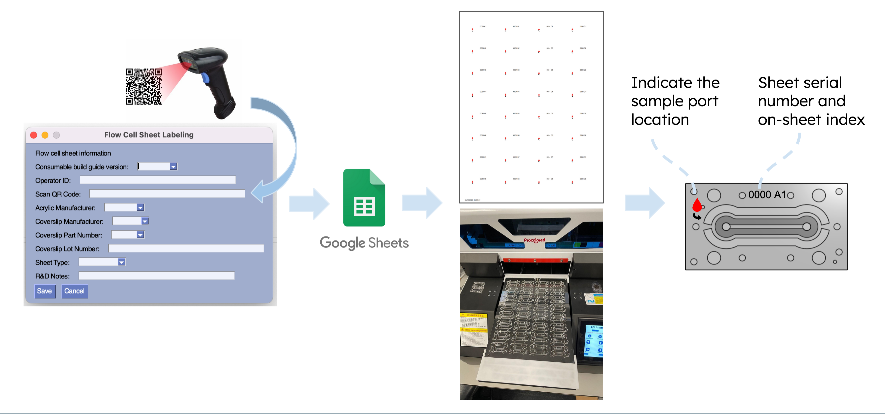

label-free malaria diagnosis microscope
Summary
During my internship at Chan Zuckerberg Biohub, I worked alongside with the bioengineering team on the development of the Label-Free Malaria Microscope. The objectives focused on quality control for the custom consumable and the manufacturing process of the microscope. An information tracking program was written in Python to receive user inputs, generate unique labels, and send the information to a designated Google Sheet. To assess the manufacturing process of the microscope, I was tasked to build the latest version of the microscope design from the ground up, provided feedback on the documentation and design based on the build experience.
Context

The Label-Free Malaria Microscope is an automatic infected cell counting diagnosis microscope. Traditionally, in addition to clinical diagnosis, malaria is diagnosed with microscopic examination of patient’s blood sample, where a trained personnel physically counts the number of parasite infected red blood cells. With automatic focusing and counting through machine learning methods, it eliminates the long and arduous nature of the current state of the art technique. Furthermore, label-free means that the samples were examined without the dyeing process commonly used to enhance parasite visibility. By directly examining the samples un-labeled, it avoids killing the cells/parasites and shortens the preparation process on top of the time saved through automatic microscopic diagnosis.
The consumables are made out of laser-cut acrylic with laminated ink channel and coverslip; the quality of these consumables are crucial to blood cell flow during the diagnosis. Poor quality can lead to ruptured cells and leaking samples, hence there is a need for systematic lot tracking. Next, the design of the microscope is meant to be publish as open-source technology, hence evaluating the assembly procedure without the influence of the initial design knowledge becomes helpful in this process.
Solution
The program written in Python takes in user inputs, sends the information to a Google sheet, and generates a printable PDF that aligns with the chips on each sheet. The PDF is printed directly onto the acrylic layer, which indicates the sample port location and the serial number for each consumable. The program is also completed with check cases to ensure the quality of the data recorded.

A malaria microscope was built from scratch following the existing build guide. The process included 3D printing, laser cutting, machining, soldering, wiring, and debugging the final product. The build guide was revised throughout based on the build experience, while fit issues and wire management were also addressed. Lastly, the entire system was validated with a thorough debugging process that tested out every sensors and actuators.